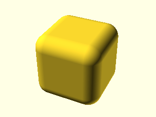
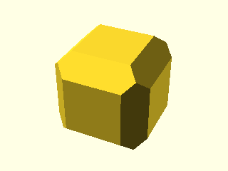
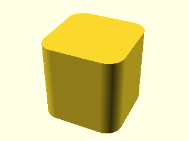
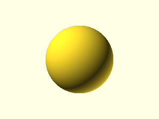
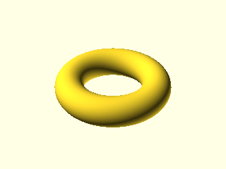
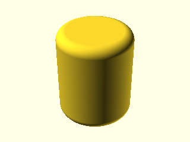
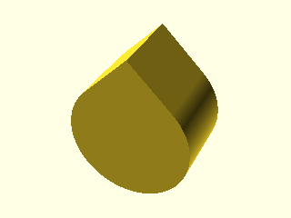

pysolidfive¶
A small libfive-based (F-Rep / signed-distance-function) shape library for PythonSCAD.
See the pysolidfive module docstring below for the full design rationale.
Every documented function that has a rendered example shows both the exact PythonSCAD code and
the image the real PythonSCAD binary produces for it, via the pythonscad-example directive
(implemented in docs/_ext/pythonscad_example.py).
API reference¶
- class pysolidfive.PyShape(sdf_fn, mn, mx, res: int = 20, cuboid_size=None, cuboid_center=(0.0, 0.0, 0.0))[source]¶
Bases:
objectWraps a libfive SDF, kept as a symbolic function of (x, y, z) rather than an already-evaluated tree or an already-meshed solid, plus the bounding box (mn/mx) frep() needs and (for cuboid-shaped instances) enough metadata to add more edge treatments after the fact.
- Extra controls beyond a bare frep() call:
Lazy, cached meshing: the real PythonSCAD/libfive C extension is only touched by .mesh() (or by falling through __getattr__ to a real method like .show()/.color()), so a chain of edits never re-meshes early.
translate(v): shifts the SDF itself (f(p) -> f(p - v)), exact and free – no meshing involved – and keeps chamfer()/round() working correctly afterwards by tracking where the cuboid’s own local origin currently sits.
Boolean composition with another PyShape (| union, & intersection, - difference) via min()/max()/negate on the two SDFs directly, cheaper and more exact than meshing both shapes first and doing mesh-level CSG.
round(radius, edges=, except_edges=) / chamfer(size, edges=, except_edges=): add more edge treatment to an existing cuboid-shaped PyShape. Because this intersects (max()) the requested treatment into the current SDF rather than rebuilding from scratch, edges can be built up incrementally with different treatments – e.g. cuboid(size).round(2, edges=”Z”).chamfer(1, edges=[TOP+LEFT]) – which a single bosl2.shapes3d.cuboid() call can’t do (rounding/chamfer are mutually exclusive there, one radius for the whole call).
CAVEAT: like bosl2.shapes3d.Bosl2Solid, this is a plain Python wrapper (composition), not a subclass of the real native PyOpenSCAD type. round()/chamfer() additionally only make sense for cuboid-shaped instances (built by cuboid(), or by a prior round()/ chamfer() call on one) – they assert if cuboid_size isn’t set, the same restriction Bosl2Solid places on its own edge/corner masking methods.
- mesh()[source]¶
Mesh this SDF into a real solid via frep() (cached after the first call).
Pads mn/mx slightly beyond the shape’s own tight bounding box before sampling: frep()’s octree evaluator needs the surface to lie strictly inside the sampled domain to see a sign change. Every constructor here sets mn/mx to the shape’s exact bounds (e.g. cuboid()’s +-size/2), so any flat face sits exactly on the domain boundary – libfive then finds no sign change there and leaves that face unmeshed (a hollow shell for e.g. a rounded box/cylinder, or an entirely empty mesh for a plain unrounded box, whose every face is flush with the domain boundary).
- rotate(a, v: list[float] | None = None) PyShape[source]¶
Rotate the SDF itself (f(p) -> f(R^-1 p)), exact and free – no meshing involved, so (like translate()) a shape can still be .round()ed/.chamfer()ed/composed afterward without forcing an early mesh. Matches the real rotate(obj, a, v)’s two calling conventions: rotate(angle, axis), or rotate([x, y, z]) for Euler angles.
Unlike translate(), this drops cuboid_size/cuboid_center metadata (so round()/chamfer() assert afterward) – edges=”TOP”/”LEFT”/etc. are global-frame selectors, evaluated before any rotation, the same order bosl2’s own anchor/edges-then-spin/orient applies them in, so treating edges post-rotation wouldn’t mean what it looks like it means.
- pysolidfive.cuboid(size: float | list[float] = [1, 1, 1], rounding: float = 0, chamfer: float = 0, edges: str | list = 'ALL', except_edges: list | None = None, res: int = 20, anchor: list[float] = [0, 0, 0]) PyShape[source]¶
A cuboid with optional per-edge rounding or chamfering, built as a libfive signed distance function (F-Rep) and returned as a PyShape (meshed lazily, via frep(), on first use) – see bosl2.shapes3d.cuboid() for the equivalent BOSL2-style mesh-CSG version (identical edges=/except_edges= semantics; both accept the same edge selector values, since pysolidfive._edges’s edge-set resolver is a byte-for-byte copy of bosl2’s own).
rounding and chamfer are mutually exclusive in a single call (matching bosl2.shapes3d.cuboid()); to mix both on different edges of the same cuboid, chain PyShape.round()/.chamfer() calls instead, e.g. cuboid(size).round(2, edges=”Z”).chamfer(1, edges=[TOP+LEFT]).
- Parameters:
size – size of the cuboid, a number or length-3 vector
rounding – edge rounding radius applied to every selected edge (default: no rounding)
chamfer – edge chamfer size applied to every selected edge (default: no chamfer)
edges – edges to treat – “ALL”/”NONE”/”X”/”Y”/”Z”, a single edge vector (e.g. TOP+LEFT), a list of edge vectors, or a raw 3x4 edge array (default “ALL”)
except_edges – edges to explicitly exclude from edges (BOSL2’s except= synonym; except is a Python keyword)
res – libfive meshing resolution passed to frep() (default 20; higher = finer mesh)
anchor – anchor point (default CENTER)
Examples
shape = pysolidfive.cuboid([20.0, 20.0, 20.0], rounding=4) shape.show()

shape = pysolidfive.cuboid([20.0, 20.0, 20.0], chamfer=4) shape.show()

Rounding only the 4 vertical edges (the per-axis-composition fallback path, not the exact-formula
edges="ALL"case above):shape = pysolidfive.cuboid([20.0, 20.0, 20.0], rounding=4, edges="Z") shape.show()

- pysolidfive.cube(size: float | list[float] = 1, anchor: list[float] = [0, 0, 0], res: int = 20) PyShape[source]¶
A cube, as a plain (unrounded) libfive SDF. See cuboid() for rounding/chamfering.
- pysolidfive.octahedron(size: float = 1, anchor: list[float] = [0, 0, 0], res: int = 20) PyShape[source]¶
An octahedron with axis-aligned points (|x|+|y|+|z| <= size/2), as a libfive SDF.
- pysolidfive.wedge(size: list[float] = [1, 1, 1], anchor: list[float] | None = None, res: int = 20) PyShape[source]¶
A 3-D triangular wedge with the hypotenuse in the X+Z+ quadrant, as a libfive SDF.
- Parameters:
size – [width, thickness, height]
anchor – anchor point (default FRONT+LEFT+BOTTOM, matching bosl2.shapes3d.wedge())
- pysolidfive.sphere(r: float | None = None, d: float | None = None, anchor: list[float] = [0, 0, 0], res: int = 20) PyShape[source]¶
A sphere, as a libfive SDF (length(p) - r).
Examples
shape = pysolidfive.sphere(r=10) shape.show()

- pysolidfive.spheroid(r: float | None = None, d: float | None = None, anchor: list[float] = [0, 0, 0], res: int = 20) PyShape[source]¶
An approximate sphere; this pure-libfive port just builds a plain sphere() (matching bosl2.shapes3d.spheroid()’s own choice to ignore style/dual for its pure-Python port).
- pysolidfive.torus(r_maj: float | None = None, r_min: float | None = None, d_maj: float | None = None, d_min: float | None = None, outer_r: float | None = None, ir: float | None = None, od: float | None = None, id: float | None = None, anchor: list[float] = [0, 0, 0], res: int = 20) PyShape[source]¶
A torus (donut) shape, as a libfive SDF (length(vec2(length(p.xy)-r_maj, p.z)) - r_min).
Note: BOSL2’s outer-radius parameter is named or, which collides with the Python keyword or; it is exposed here as outer_r instead. See bosl2.shapes3d.torus() for the full parameter set this mirrors.
Examples
shape = pysolidfive.torus(r_maj=15, r_min=5) shape.show()

- pysolidfive.cylinder(h: float | None = None, r1: float | None = None, r2: float | None = None, center: bool | None = None, l: float | None = None, r: float | None = None, d: float | None = None, d1: float | None = None, d2: float | None = None, anchor: list[float] = [0, 0, 0], res: int = 20) PyShape[source]¶
A cylinder/cone (no rounding) as a libfive SDF – see cyl() for rounding/chamfering.
- pysolidfive.cyl(h: float | None = None, r: float | None = None, center: bool | None = None, l: float | None = None, r1: float | None = None, r2: float | None = None, d: float | None = None, d1: float | None = None, d2: float | None = None, chamfer: float | None = None, chamfer1: float | None = None, chamfer2: float | None = None, rounding: float | None = None, rounding1: float | None = None, rounding2: float | None = None, anchor: list[float] | None = None, res: int = 20) PyShape[source]¶
A cylinder/cone with optional rounding or chamfering of its end rims, as a libfive SDF. See bosl2.shapes3d.cyl() for the full BOSL2-style version this mirrors (circum=/realign=/ shift=/texture= aren’t supported here).
rounding/chamfer (and their 1/2 bottom/top variants) are mutually exclusive, same as bosl2.shapes3d.cyl().
Examples
shape = pysolidfive.cyl(h=20, r=8, rounding=2) shape.show()

- pysolidfive.xcyl(h: float | None = None, r: float | None = None, d: float | None = None, r1: float | None = None, r2: float | None = None, d1: float | None = None, d2: float | None = None, l: float | None = None, chamfer: float | None = None, chamfer1: float | None = None, chamfer2: float | None = None, rounding: float | None = None, rounding1: float | None = None, rounding2: float | None = None, anchor: list[float] = [0, 0, 0], res: int = 20) PyShape[source]¶
A cylinder oriented along the X axis. See cyl() for argument details.
- pysolidfive.ycyl(h: float | None = None, r: float | None = None, d: float | None = None, r1: float | None = None, r2: float | None = None, d1: float | None = None, d2: float | None = None, l: float | None = None, chamfer: float | None = None, chamfer1: float | None = None, chamfer2: float | None = None, rounding: float | None = None, rounding1: float | None = None, rounding2: float | None = None, anchor: list[float] = [0, 0, 0], res: int = 20) PyShape[source]¶
A cylinder oriented along the Y axis. See cyl() for argument details.
- pysolidfive.zcyl(h: float | None = None, r: float | None = None, d: float | None = None, r1: float | None = None, r2: float | None = None, d1: float | None = None, d2: float | None = None, l: float | None = None, chamfer: float | None = None, chamfer1: float | None = None, chamfer2: float | None = None, rounding: float | None = None, rounding1: float | None = None, rounding2: float | None = None, anchor: list[float] = [0, 0, 0], res: int = 20) PyShape[source]¶
A cylinder oriented along the Z axis (same as cyl()). See cyl() for argument details.
- pysolidfive.tube(h: float | None = None, outer_r: float | None = None, ir: float | None = None, od: float | None = None, id: float | None = None, wall: float | None = None, outer_r1: float | None = None, outer_r2: float | None = None, od1: float | None = None, od2: float | None = None, ir1: float | None = None, ir2: float | None = None, id1: float | None = None, id2: float | None = None, l: float | None = None, anchor: list[float] = [0, 0, 0], res: int = 20) PyShape[source]¶
A hollow cylindrical tube (outer cylinder minus inner cylinder), as a libfive SDF.
Note: BOSL2’s outer-radius parameters are named or/or1/or2; exposed here as outer_r/outer_r1/outer_r2 since or is a Python keyword.
- pysolidfive.pie_slice(h: float | None = None, r: float | None = None, ang: float = 30, r1: float | None = None, r2: float | None = None, d: float | None = None, d1: float | None = None, d2: float | None = None, l: float | None = None, anchor: list[float] = [0, 0, 0], res: int = 20) PyShape[source]¶
A pie slice (wedge of a cylinder/cone), as a libfive SDF: a cylinder intersected with an angular sector (built from 1-2 half-planes – ang is a plain Python float fixed at construction time, so choosing intersection vs union of the two half-planes based on ang <= 180 is an ordinary Python conditional, not a per-point SDF branch).
- pysolidfive.prismoid(size1: list[float], size2: list[float], h: float | None = None, shift: list[float] = [0, 0], l: float | None = None, anchor: list[float] = [0, 0, -1], res: int = 20) PyShape[source]¶
A rectangular prismoid (truncated pyramid), as a libfive SDF.
CAVEAT: unlike bosl2.shapes3d.prismoid(), this pure-libfive port does not support rounding/chamfer of the vertical edges (deriving an exact SDF for a tapered box’s independently-radiused vertical edges was out of scope here – use bosl2.shapes3d.prismoid() for that, or pysolidfive.cuboid() for the non-tapered case). The SDF itself is built by linearly interpolating the local half-size/shift at each height z (clamped to the [bottom, top] range via min()/max(), so no true per-point conditional is needed) and taking the 2-D box distance in that local cross-section, intersected with the top/bottom slab – exact for a non-tapered box (size1 == size2, shift == [0, 0]), an approximation (same character as cuboid()’s documented corner caveats) for a genuine taper.
- Parameters:
size1 – [width, length] of the bottom end
size2 – [width, length] of the top end
h/l – height of the prism
shift – [X,Y] shift of the top center relative to the bottom center
anchor – anchor point (default BOTTOM)
res – libfive meshing resolution passed to frep() (default 20)
- pysolidfive.rect_tube(h: float | None = None, size: float | list[float] | None = None, isize: float | list[float] | None = None, wall: float | None = None, rounding: float = 0, irounding: float | None = None, l: float | None = None, anchor: list[float] = [0, 0, -1], res: int = 20) PyShape[source]¶
A rectangular tube (a rectangle with a rectangular hole through it), as a libfive SDF (outer rounded-rect-extrusion minus inner rounded-rect-extrusion, reusing bosl2.shapes3d.cuboid()’s per-edge machinery for each). Only the 4 vertical edges are ever rounded (edges=”Z”, matching the “rounded rectangular tube” look BOSL2’s own rect_tube() produces) – there’s no per-edge selection here, just one outer radius and one inner radius (default: same as the outer).
- Parameters:
h/l – height/length of the tube (default 1)
size – outer [X,Y] size of the tube
isize – inner [X,Y] size of the tube
wall – wall thickness (used with size if isize isn’t given, or vice versa)
rounding – outer vertical-edge rounding radius (default: no rounding)
irounding – inner vertical-edge rounding radius (default: same as rounding)
anchor – anchor point (default BOTTOM)
res – libfive meshing resolution passed to frep() (default 20)
- pysolidfive.interior_fillet(l: float = 1.0, r: float | None = None, ang: float = 90, d: float | None = None, anchor: list[float] = [0, 0, 0], res: int = 20) PyShape[source]¶
A shape to fillet an interior corner between two faces meeting at ang degrees, as a libfive SDF: the wedge between the two faces, minus a cylindrical arc of radius r positioned so it’s tangent to both. Extruded along Y for length l.
CAVEAT: simplified relative to bosl2.shapes3d.interior_fillet() – no overlap= flap (an SDF union is already watertight without one) and no independent anchor-face alignment; the wedge’s first face lies along the local +X/Z=0 half-plane. See bosl2.shapes3d.interior_fillet() for the exact BOSL2-compatible anchor/orientation.
- pysolidfive.rounding_edge_mask(l: float | None = None, h: float | None = None, r: float | None = None, d: float | None = None, excess: float = 0.1, res: int = 20) PyShape[source]¶
A standalone 3-D edge-rounding CUTTER of length l, as a libfive SDF, for subtracting from another PyShape to round over a sharp 90-degree edge that isn’t part of a cuboid()’s own edge/corner treatment – e.g. an edge exposed by an earlier cut, or any other edge you’d otherwise position by hand. Matches bosl2.masking.rounding_edge_mask()’s local-frame convention exactly (same .rotate(…).translate(…) call sites work unchanged): origin at the sharp edge, +X/+Y extending into the material (with a small excess skirt past 0 on each so the cutter fully bridges the material being cut), centered along its own Z axis over length l, with a quarter-circle bite of radius r taken out of the far corner.
Built the same way interior_fillet() builds its wedge-minus-circle cutter: a square corner (box) minus a circle tangent to both its flat sides.
CAVEAT: simplified relative to bosl2.masking.rounding_edge_mask() – one radius for the whole length (no r1/r2 taper).
- pysolidfive.polygon_extrude(pts: list[list[float]], length: float, res: int = 20) PyShape[source]¶
Extrude an arbitrary CONVEX 2-D polygon pts (either winding order) along Z by length, centered – for a custom edge-profile cutter with no simple closed form (like bosl2.shapes3d.Bosl2Solid.edge_profile_asym()’s children= path, but swept here by hand with an explicit rotate()/translate() rather than an automatic per-edge sweep).
As a libfive SDF, this is the max() of each edge’s signed half-plane distance – exact at and near any face, but (like every other per-axis/per-plane-composed shape in this module – see the module docstring) underestimates the true Euclidean distance near a vertex, away from the surface; the sign is still correct everywhere a convex polygon’s supporting half-planes actually bound it.
CAVEAT: pts must describe a CONVEX polygon. A concave vertex’s half-plane doesn’t bound the shape there, so both the sign and the surface would come out wrong.
- pysolidfive.polygon_prism(paths: list, h: float, rounding_top: float = 0, rounding_bottom: float = 0, res: int = 20) PyShape[source]¶
Extrude an arbitrary SIMPLE polygon (convex or concave – exact 2-D SDF via _polygon_sdf_xy(), unlike polygon_extrude()’s convex-only half-planes) from z=0 up to z=h, with optional circular treatments on each end rim – the same job as real BOSL2’s offset_sweep(path, height=h, bottom=os_circle(b), top=os_circle(t)), and the same sign convention for the radii: positive is a convex roundover eased into the rim, negative is an outward flare, 0 leaves that rim square. Sits on z=0 (not centered), matching offset_sweep.
paths is one polygon (a list of [x, y] points) or a list of NON-OVERLAPPING polygons (a “region” of disjoint islands, min/union-combined). Holes aren’t supported.
Roundover rims use the same exact inset-then-offset construction as _rounded_box_sdf(), in (d2d, z) cross-section coordinates: q = (d2d + r, (z - h) + r) for the top rim, then min(max(q), 0) + hypot(max(q, 0)) - r – which reduces exactly to the plain side/end distance away from its own rim, so both rims plus the sharp prism combine with max(). Flares union on an extra quarter-circle ring of material outside the wall (the same box-minus-tangent-circle style as interior_fillet()/rounding_edge_mask(), swept here along the polygon via the 2-D SDF instead of along a straight edge).
- Parameters:
paths – one [[x, y], …] polygon, or a list of disjoint such polygons
h – extrusion height (z from 0 to h)
rounding_top – top-rim treatment: >0 roundover radius, <0 flare, 0 square (default 0)
rounding_bottom – bottom-rim treatment, same convention (default 0)
res – libfive meshing resolution passed to frep() (default 20)
- pysolidfive.teardrop(h: float | None = None, r: float | None = None, ang: float = 45, cap_h: float | None = None, r1: float | None = None, r2: float | None = None, d: float | None = None, d1: float | None = None, d2: float | None = None, anchor: list[float] = [0, 0, 0], res: int = 20) PyShape[source]¶
A teardrop shape (useful for 3-D-printable horizontal holes), as a libfive SDF: the union of a circle and a “roof” of two planes meeting at the apex, tangent to the circle, extruded along Y for thickness h.
CAVEAT: simplified relative to bosl2.shapes3d.teardrop() – no chamfer=/circum=/ realign= support. cap_h (truncation height) is supported since it’s a plain top-slab intersection.
Examples
shape = pysolidfive.teardrop(h=10, r=8) shape.show()

- pysolidfive.onion(r: float | None = None, ang: float = 45, cap_h: float | None = None, d: float | None = None, anchor: list[float] = [0, 0, 0], res: int = 20) PyShape[source]¶
An onion-dome shape (a sphere with a conical cap), as a libfive SDF: the union of a sphere and a cone tangent to it, revolved around Z.
CAVEAT: simplified relative to bosl2.shapes3d.onion() – no circum=/realign= support.
- pysolidfive.heightfield(data: Callable[[Any, Any], Any], size: list[float] = [100, 100], bottom: float = -20, maxz: float = 99, res: int = 20) PyShape[source]¶
A 3-D surface from a height function, as a libfive SDF.
CAVEAT: unlike bosl2.shapes3d.heightfield(), data must be a callable f(x, y) -> z built from ordinary arithmetic/libfive-supported math (it gets called directly with libfive coordinate trees, so it becomes part of the symbolic expression) – a 2-D array of height samples isn’t supported, since there’s no closed-form way to “look up” an arbitrary grid of numbers inside a libfive expression (no gather/index primitive is exposed). Use bosl2.shapes3d.heightfield() for array data. xrange=/yrange=/style= aren’t applicable here since there’s no discrete grid to sample.
- Parameters:
data – callable (x, y) -> height, evaluated symbolically
size – [X,Y] size of the surface (default [100,100])
bottom – Z coordinate for the bottom of the object (default -20)
maxz – maximum height to model, taller values are clamped (default 99)
res – libfive meshing resolution passed to frep() (default 20)